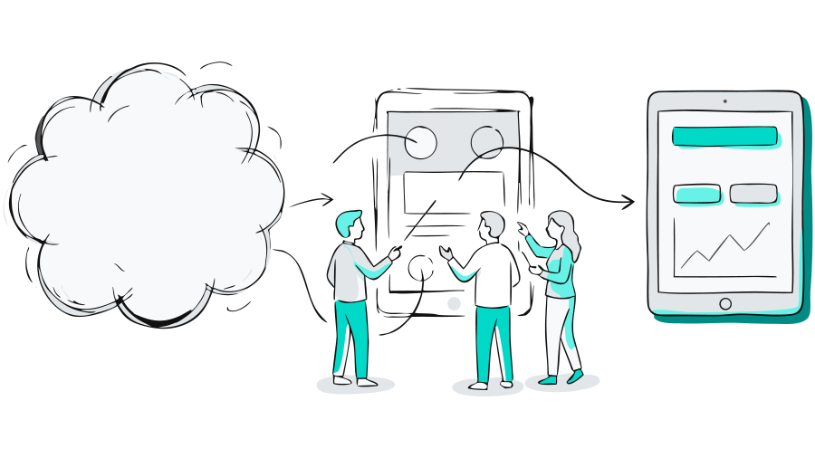

What it is
A focused 2–3 week sprint that shows where your product is breaking, what to fix first, and what's worth building at all.
Who This Is For
- Your team can't agree on what to build next
- You're under pressure to show something real to leadership or a board
- Developers are waiting on clarity, not more ideas
- Your product is underperforming, and "small tweaks" aren't moving the needle
- You're about to invest in building and want fewer expensive surprises
If you need branding, marketing, or long-form research, or if key decision-makers can't be involved, this sprint will produce artefacts, not real decisions.
What You Walk Away With
- A clickable, high-fidelity prototype that shows the actual direction of the product
- Clear user flows that define what gets built and what doesn't
- A short decision summary capturing trade-offs, assumptions, and risks
- Developer-ready design specs so the build can start without guesswork
Why This Pays for Itself
Most teams don't lose money on bad development. They lose it on building the wrong thing with confidence. This sprint reduces that risk early, before engineering time, company politics, and budget get locked into a direction that's hard to reverse.
Format & investment
- Timeline: 2–3 week fixed-scope sprint
- Price: from £4,000, depending on scope and complexity
- Your team’s time: One 2-hour alignment session, plus short reviews across the sprint
- Start: Book a 30-minute call to see if this sprint fits your situation
Ready to Get Started?
Book a 30-minute call to see if this sprint fits your situation.
Book Your Discovery Call